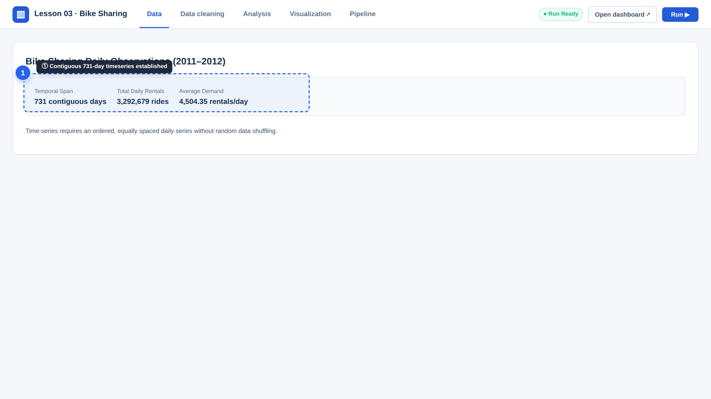
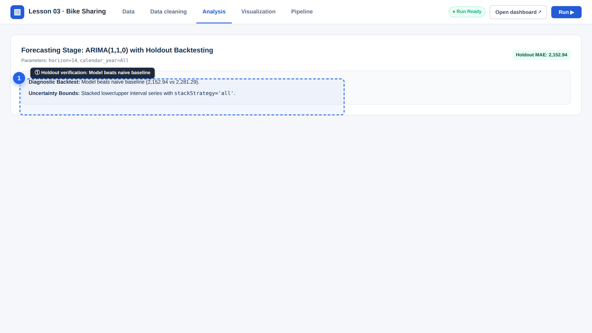
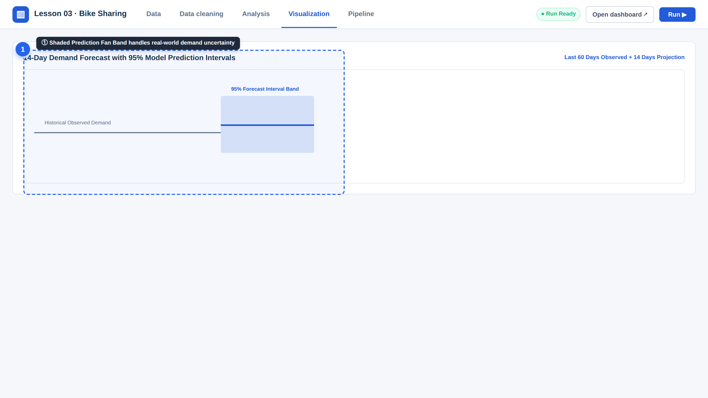
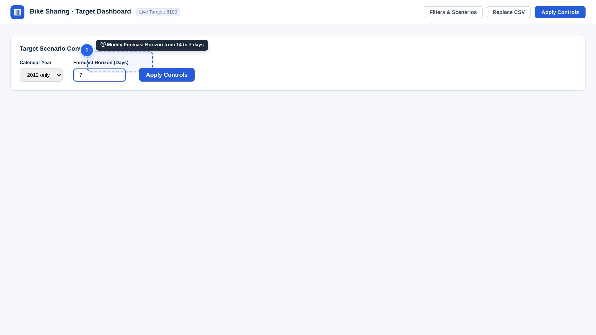

Lesson 03 / Bike Sharing Daily
Understand trends & forecasts.
How does municipal rental demand evolve over calendar seasons, and how do we quantify future uncertainty with holdout-validated prediction intervals?
Time-series forecasting
ARIMA(1,1,0)
Holdout backtesting
95% confidence fan band
Horizon sliders
Part 1 · The Analytical Problem
Point predictions create operational fragility.
Fleet operators who rely solely on a single projected number inevitably fail: if demand spikes, docking stations empty and commuters are stranded; if demand drops, maintenance crews reposition bicycles unnecessarily. Robust operational planning requires both an expected trajectory and an explicit band of uncertainty.
In this lesson, we study 731 contiguous daily observations from the Capital Bikeshare system (2011–2012). Our objective is to construct an ARIMA forecast over a 14-day projection horizon, rigorously test it against a 14-day holdout sample to ensure it beats naive persistence, and display a shaded 95% confidence fan band.
Part 2 · The Visual Concept
Connecting historical observations with fan bands.
1. Holdout Backtesting Validation
Before trusting future projections, the pipeline splits historical data into training and holdout periods. The ARIMA model achieves a Mean Absolute Error (MAE) of 2,152.94, outperforming the standard naive persistence baseline (MAE 2,281.29).
2. Two-Sided Shaded Prediction Band
Using client-side ECharts stacked area bands (stackStrategy='all'), the tutorial displays a lower bound transparent spacer and an upper bound shaded envelope (rgba(36, 91, 215, 0.15)). The band widens over the 14-day horizon as cumulative uncertainty \(\sigma \sqrt{h}\) grows.
Part 3 · Data Dictionary
Capital Bikeshare Daily Dataset (Fanaee-T and Gama).
731 contiguous days
3,292,679 total rides
4,504.35 daily average
0 missing days
Part 4 · Step-by-Step Instructions
Build the time-series model in WPS-AI Studio.
01
Upload Data & Establish Time Ordering
Launch the studio via python launcher.py. Create a new project, upload bike_daily.csv, and paste the following into the Business context field:
Each row is one calendar day from 2011-01-01 to 2012-12-31. dteday is contiguous daily date. cnt is total daily rentals (casual + registered). temp and hum are normalized measurements. Year 0 is 2011, Year 1 is 2012.
02
Prompt the AI Stage Creator
In the Chat composer, set the context to Project and send the following prompt:
Build a forecasting pipeline for total daily rentals (cnt).
Implement an ARIMA(1,1,0) projection over a 14-day horizon with 95% confidence bands using holdout backtesting.
In the dashboard, display KPI metrics for Total Fleet Rides, 60-Day Mean Demand, and Holdout MAE.
Render a line chart showing the last 60 days of observed data joined with the 14-day forecast and shaded 95% confidence fan band.
Add scenario controls for Calendar Year (All, 2012 only) and Forecast Horizon (7, 14, 28 days).
Save stages; I will select Run.
Review the proposed changes and select Apply. Then select Run ▶ in the top header.
Part 5 · Annotated Screenshot Reference
Compare against the verified Studio UI.
Use these full-browser annotated captures to verify each stage of your execution:

Annotated Guidance: ① Confirm the data profiler reads 731 contiguous daily rows spanning 2011 to 2012 with 3,292,679 total recorded rides.

Annotated Guidance: ① Inspect the forecast stage diagnostics. Backtesting proves the model achieves an MAE of 2,152.94, comfortably beating the naive persistence benchmark (2,281.29).

Annotated Guidance: ① The visualization shows historical demand joined with the 14-day projection. The shaded blue fan band widens over time to reflect increasing uncertainty.

Annotated Guidance: ① In the Target dashboard, adjust the Forecast Horizon from 14 days down to 7 days, and select Apply Controls for instant recalculation.
Part 6 · Worked Reference Dashboard
Interactive Reference Forecast & Checkpoints.
Verify your calculations against the live reference chart below:
Part 7 · Troubleshooting
What to check if numbers differ.